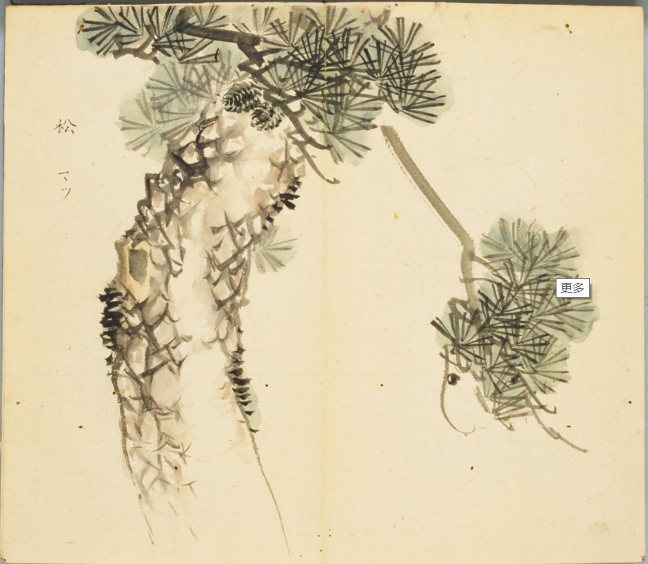
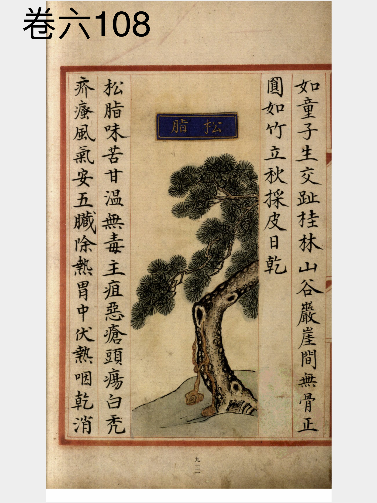
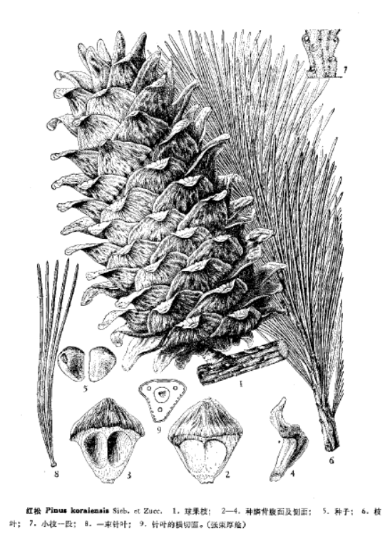

出现篇目
古代记载 《毛诗故训传》
松，木也。（《毛传》注《山有扶苏》）
《毛诗正义》
正义曰：传以乔松共文，嫌为一木，故云“松，木”，以明乔非木也。（《毛诗正义》疏《山有扶苏》）
《本草纲目》
《别录》曰∶松脂生太山山谷。六月采。 颂曰∶松处处有之。 其叶有两鬣、五鬣、七鬣。岁久则实繁。中原虽有，不及塞上者佳好也。松脂以通明如薰陆香颗者为胜。 宗奭曰∶松黄一如蒲黄，但味差淡。松子多海东来，今关右亦有，但细小味薄也。 时珍曰∶松树 修耸多节，其皮粗浓有鳞形，其叶后凋。二、三月抽蕤生花，长四、五寸，采其花蕊为松黄。结实状如猪心，叠成鳞砌，秋老则子长鳞裂。然叶有二针、三针、五针之别。三针者为栝子松，五针者为松子松。 其子大如柏子，惟辽海及云南者，子大如巴豆可食，谓之海松子，详见果部。孙思邈云∶松脂以衡山者为良。衡山东五百里，满谷所出者，与天下不同。苏轼云∶镇定松脂亦良。《抱朴子》云∶凡老松皮内自然聚脂为第一，胜于凿取及煮成者。其根下有伤处，不见日月者为阴脂，尤佳。老松余气结为茯苓。千年松脂化为琥珀。《玉策记》云∶千年松树四边枝起，上杪不长如偃盖。其精化为青牛、青羊、青犬、青人、伏龟，其寿皆千岁。
当代记载 《中国植物志》
松科，松属植物。常绿乔木。球花单性，雌雄同株。球果第二年（稀第三年）秋季成熟，熟时种鳞张开，种子散出，稀不张开，种子不脱落。 我国产22种10变种, 分布几遍全国，其中如红松、华山松、云南松、马尾松、油松、樟子松等为我国森林中的主要树种。

<细井徇>

<补遗雷公炮制便览>

<中国植物志>